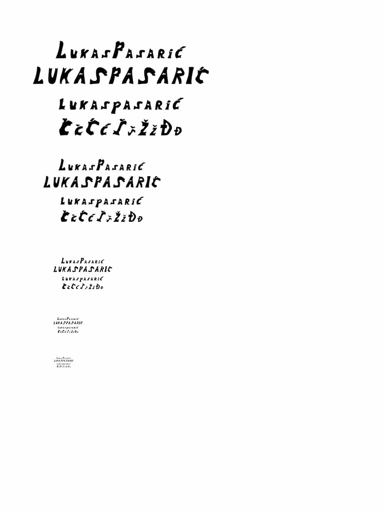
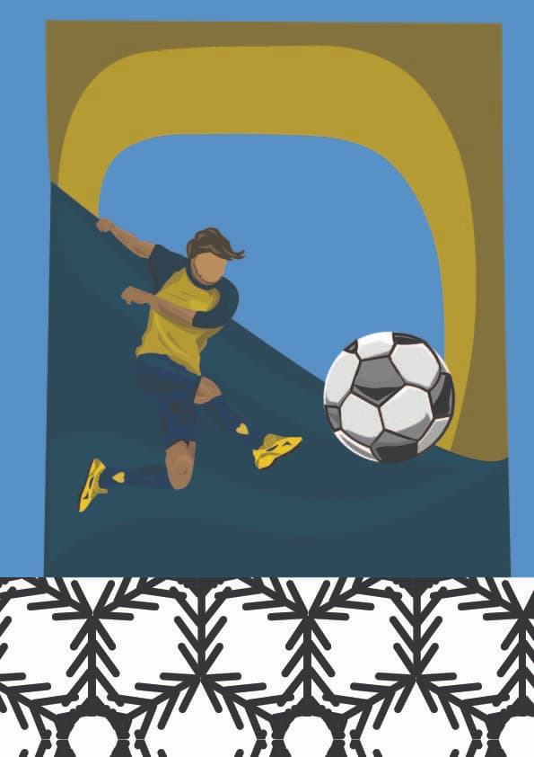
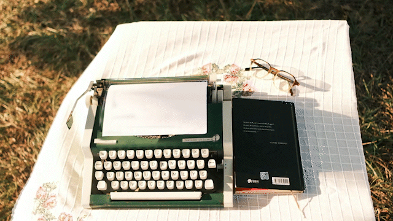

Ovo su sve vježbe koje sam odradio tijekom ovog semestra.
U ovoj vježbi sam napravio vlastiti font te sam ga kasnije primijenio u Wordu.
U ovoj vježbi sam koristio interpolaciju kako bi postigao efekt trodimenzionalnosti.

U ovoj vježbi sam koristio osnovne alate Illustratora kako bi napravio nogometaša i pozadinu.
U ovoj vježbi sam koristio gradient i mash alate kako bi napravio šahovsku figuricu sa sjenama.

U ovom projektnom zadatku sam koristio sva primijenjena znanja iz Illustratora kako bi napravio što bolje flamingose.
.jpg)
U ovoj vježbi sam koristio tehnike retuširanja kako bih ispravio korekcije na licu.
.jpg)
U ovoj vježbi sam koristio tehniku koloriranja kako bih napravio šest slika sebe gdje na svakom djelu imam drugačiju boju.
.jpg)
U ovoj vježbi sam koristio tehnike blendanja i maski kako bih dobio što realističniju fotografiju.
.jpg)
U ovom projektnom zadatku sam koristio sve primijenjene tehnike kako bih dobio što realističniju fotografiju.
.jpg)
U ovoj vježbi sam koristio tehnike u Adobe Premiereu te sam koristio Photoshop. Cilj svega je bio da se dobije kinemagraf.
U ovoj vježbi sam od odabranih videa montirao svoj i uredio alatima.
U ovoj vježbi sam napravio svoju prvu web stranicu.
Moja stranica